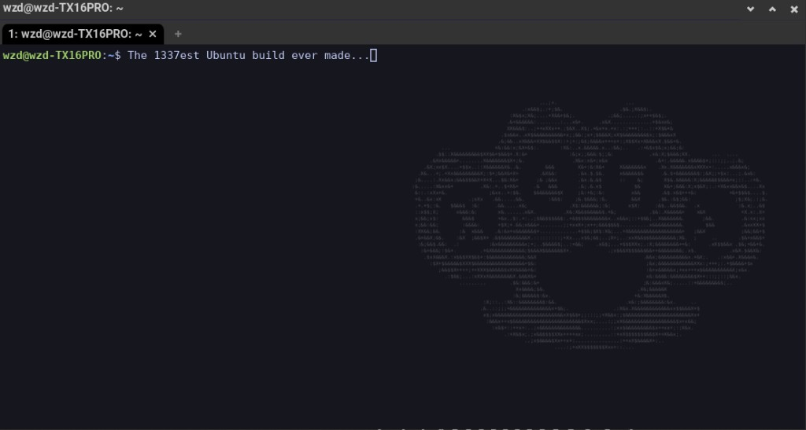

What this is
A reproducible build for Ubuntu 24.04 / 26 desktops. Clone the repo,
run install.sh, and get the same toolchain and hardening
used on the reference machine. Part of
VulnScape.
- WezTerm as default terminal with an X47 watermark
- Privacy apps — Mullvad VPN (apt) and Tor Browser
- Pentest + dev tools via apt, Go, pipx, cargo, and release binaries
- Lean by default — non-English language packs and default desktop bloat removed, zram + trim, file indexer off (reversible)
- Polished desktop — bottom dock with intelligent autohide, 3D effects (Coverflow Alt-Tab, rotating Desktop Cube, Glitch window animations, Blur My Shell, wobbly windows), hover-only window controls and an ASCII-art X47 duster wallpaper
- Desktop widgets — London + New York clocks, live BTC ticker, and CPU/RAM vitals drawn on the wallpaper
- Hardened Firefox — telemetry, Pocket and sponsored content off, tracking protection, HTTPS-only and DoH via system policy
- Hardening restored from a snapshot (UFW, fail2ban, AppArmor, auditd, sysctl)
- Amnesia mode (opt-in) — RAM-only
anonhome, Tor kill-switch, random MAC, NymVPN
Get the installer
Source and releases live on GitHub. There is no separate store or paid download.
git clone https://github.com/sk1tzwzd/ubuntu-x47-build.git
cd ubuntu-x47-build
chmod +x install.sh snapshot.sh modules/*.sh
./install.shInstall from ISO
Each release also ships a bootable installer ISO — the official Ubuntu 26.04 desktop image with the X47 build baked in. Pick Install X47 Ubuntu 26.04 at boot, install as normal, and the X47 setup runs automatically on your first login. GitHub caps release files at 2 GB, so the ISO is split into parts:
# download all x47-ubuntu-26.04-desktop-amd64.iso.*.part files, then:
cat x47-ubuntu-26.04-desktop-amd64.iso.*.part > x47-ubuntu-26.04-desktop-amd64.iso
sha256sum -c SHA256SUMS --ignore-missing
Write it to a USB stick with your usual tool (GNOME Disks,
balenaEtcher, or dd) and boot from it.
More screenshots
Additional captures will be added here. Placeholders mark the slots.


anon session — Tor verified, Create Persistent Storage.